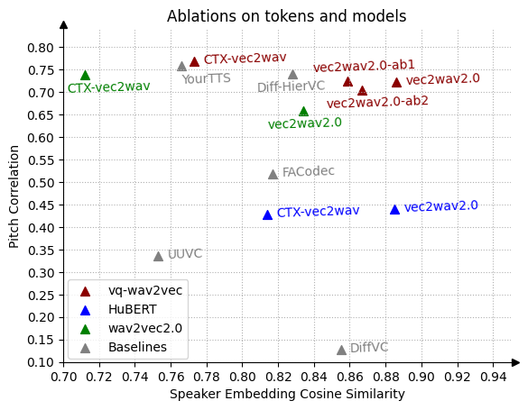
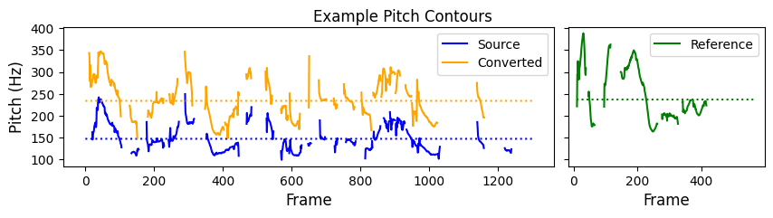

1MoE Key Lab of Artificial Intelligence, AI Institute X-LANCE Lab, Department of Computer Science and Engineering, Shanghai Jiao Tong University Shanghai, China 2Shenzhen Research Institute of Big Data, Shenzhen, China
We propose a new speech discrete token vocoder, vec2wav 2.0, that advances voice conversion (VC). We use discrete tokens from speech self-supervised models as the content features of source speech, and treat VC as a prompted vocoding task. To amend the loss of speaker timbre in the content tokens, vec2wav 2.0 utilizes the WavLM features to provide strong timbre-dependent information. A novel adaptive Snake activation function is proposed to better incorporate timbre into the waveform reconstruction process. In this way, vec2wav 2.0 learns to alter the speaker timbre appropriately given different reference prompts. Also, no supervised data is required for vec2wav 2.0 to be effectively trained. Experimental results demonstrate that vec2wav 2.0 outperforms all other baselines to a considerable margin in terms of audio quality and speaker similarity in any-to-any VC. Ablation studies verify the effects made by the proposed techniques. Moreover, vec2wav 2.0 achieves competitive cross-lingual VC even only trained on monolingual corpus, pushing the frontiers of VC.
English Any-to-Any VC
We conduct English any-to-any VC comparisons using the unseen speakers in the LibriTTS test-clean split.
We randomly select 10 speakers, from each of whom 2 utterances are chosen to be the source utterances.
Another 10 speakers are selected as target speakers with one 3-second reference utterance for each.
This yields a test set of 200 any-to-any VC cases.
The test set metadata can be found here. Every line of this file means "{source}_to_{target} {target}".
To enable a fair comparison between models, we downsample all the audio to 16kHz (although vec2wav 2.0 generates 24kHz audio).
[Show transcript]When one kidney ceases to act from disease, the other increases in size, and does double work.
[Show transcript]The music, hautboys, flutes, and viols, was delightfully descriptive of rural delights.
[Show transcript]"But it is not with a view to distinction that you should cultivate this talent, if you consult your own happiness.
[Show transcript]Every minister should make much of his calling and impress upon others the fact that he has been delegated by God to preach the Gospel.
[Show transcript]Every scheme known to politicians must be worked, and none knew the intricate game better than Hopkins.
Cross-Lingual Any-to-Any VC
We use the same set of English source utterances as in English VC tests, but convert to target speakers in other languages.
We collect reference utterances from five languages (Spanish, German, Dutch, Italian, French.) in MLS.
The test set is the full combination of source and target utterances, which has also 200 pairs.
The test set metadata can be found here. Every line of this file means "english_{source}_to_{language}_{target} {language}_{target}", and "source" and "target" refers to LibriTTS and MLS utterance IDs respectively.
[Show transcript]If a layman in giving baptism pour the water before saying the words is the child baptized?
French
[Show transcript]As for the rest of mankind, stagnating night rests upon them.
German
[Show transcript]All this I could hardly explain to him, as I should thus be giving to him the strongest evidence against my own philosophy.
Dutch
[Show transcript]"He was soft hearted and impetuous," said Beth; "and, being in love, he didn't stop to count the cost."
Spanish
[Show transcript]He was dressed in a tunic of flowers, which set off his graceful and well formed figure to advantage.
Italian
Ablation Study
Apart from vq-wav2vec, we train CTX-vec2wav and vec2wav 2.0 on HuBERT tokens and wav2vec 2.0 tokens.
We additionally train two variants of vec2wav 2.0 on vq-wav2vec inputs: vec2wav 2.0-ab1 that replaces the adaptive Snake activations in BigVGAN by the original Snakes; and vec2wav 2.0-ab2 that further replaces BigVGAN with HifiGAN.
Thus the comparison between vec2wav2.0 and "ab1" indicates the effect of adaptive Snake activation, while that between CTX-vec2wav and "ab2" shows the difference made by prompt feature and modules.
Perfect VC systems should lie on the top right of the following chart.

Source Utterance
Target Speaker
[Show transcript]Emerald and black and russet and olive, it moved beneath the current, swaying and turning.
We present the pitch contours of a conversion sample (LibriTTS 2830_3980_000021_000000 as source, 237_134493_000015_000004 as target).

Source Utterance
Target Speaker
Converted Sample
[Show transcript]Every minister should make much of his calling and impress upon others the fact that he has been delegated by God to preach the Gospel.